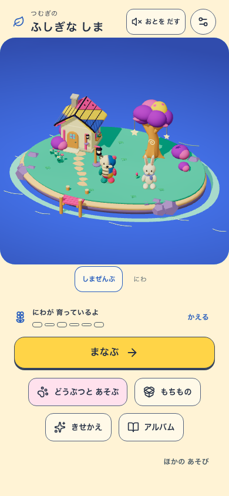
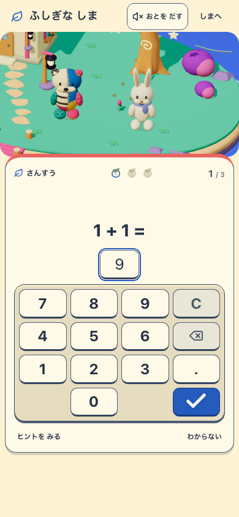
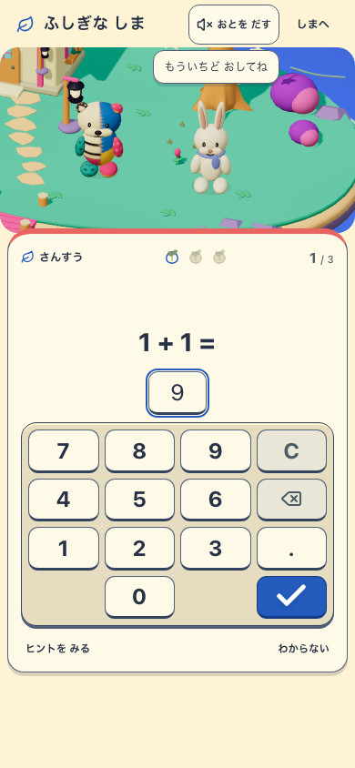
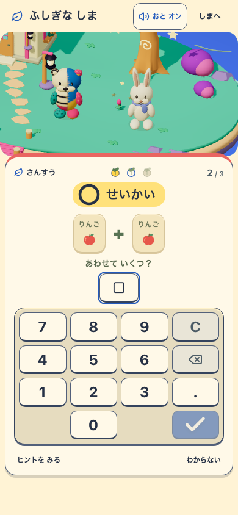
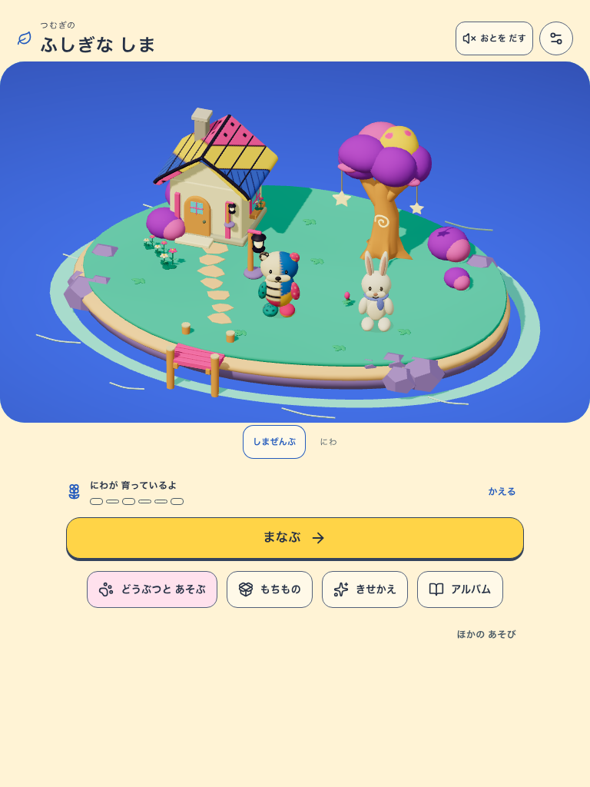
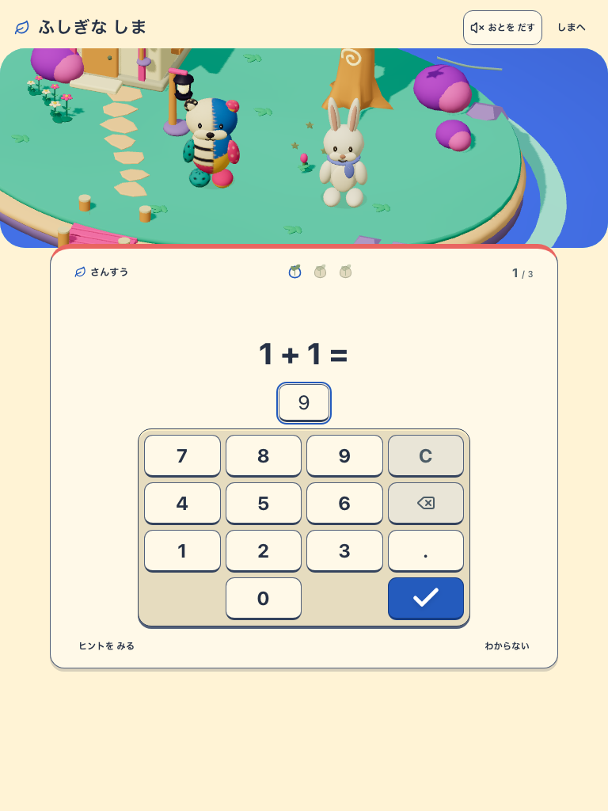
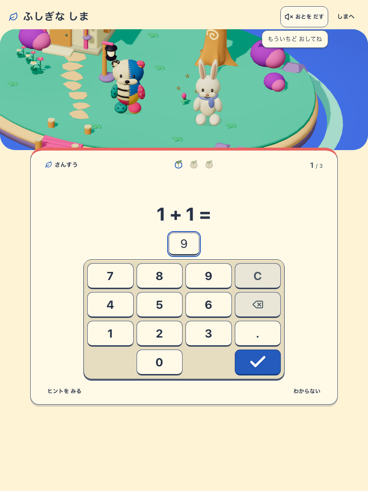
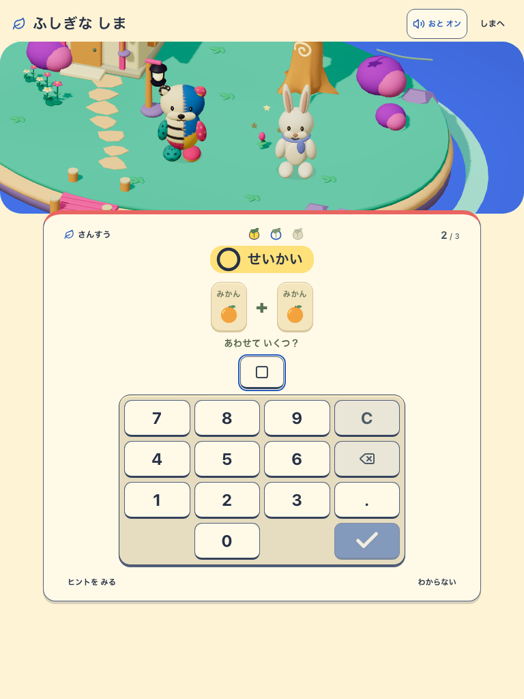

「おとを だす」ボタン
今回の変更だけをHEADに重ねた固定production buildの実画面。共有作業中の入江・カメラ変更の完成証拠とは別。音off、学習中のoff、明示した再開拒否の診断、正解後の音onを比較する。
対象 http://127.0.0.1:5598 / sound-control-isolated:ab57470b-351c-4098-92a5-903d34b34020 / mystic-island-v1 / mystic-island-living-v5 / learning-v2。Service workerなし。実機スピーカーと子どもの理解は未確認。

phone-home-off.png
home / 390×844
phone-learning-off.png
learning / 390×844
phone-resume-refused.png
learning / 390×844
phone-correct.png
learning / 390×844
tablet-home-off.png
home / 768×1024
tablet-learning-off.png
learning / 768×1024
tablet-resume-refused.png
learning / 768×1024
tablet-correct.png
learning / 768×1024